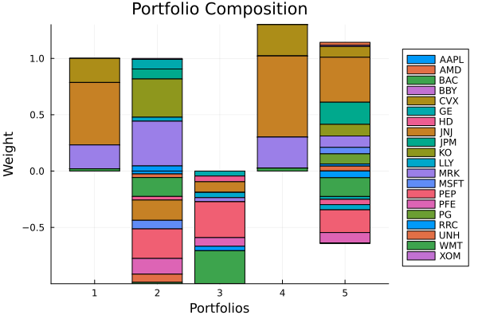
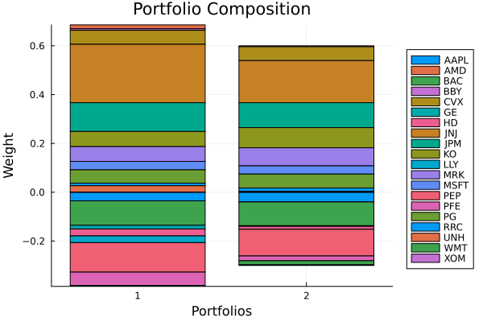

The source files can be found in examples/.
Budget constraints
This example shows how to use budget constraints. The budget is the sum of the portfolio weights. The short budget is the absolute value of the sum of the negative weights.
The two constraints act on different variables. The budget constraint acts on the weights. The short budget constraint acts on one relaxation variable per asset, and each relaxation variable must be at least the absolute value of that asset's negative weight. The solver is free to set a relaxation variable above that value. Then the short positions you print can sum to less than the short budget, and the constraint is still met. The short budget is therefore an upper bound on the short positions. Set xbgt = true on the JuMPOptimiser to make it exact, which turns the problem into a mixed-integer one.
using PortfolioOptimisers, PrettyTables# Format for pretty tables.tsfmt = (v, i, j) -> begin if j == 1 return Date(v) else return v endend;resfmt = (v, i, j) -> begin if j == 1 return v else return isa(v, Number) ? "$(round(v*100, digits=3)) %" : v endend;mipresfmt = (v, i, j) -> begin if j ∈ (1, 2, 3) return v else return isa(v, Number) ? "$(round(v*100, digits=3)) %" : v endend;1. Data
We use one year of daily prices of 20 assets of the S&P 500, and convert them to returns.
using CSV, TimeSeries, DataFramesX = TimeArray(CSV.File(joinpath(@__DIR__, "..", "SP500.csv.gz")); timestamp = :Date)[(end - 252):end]pretty_table(X[(end - 5):end]; formatters = [tsfmt])# Compute the returnsrd = prices_to_returns(X)ReturnsResult
nx ┼ 20-element Vector{String}
X ┼ 252×20 Matrix{Float64}
nf ┼ nothing
F ┼ nothing
nb ┼ nothing
B ┼ nothing
ts ┼ 252-element Vector{Date}
iv ┼ nothing
ivpa ┼ nothing
pnl ┼ AssetPanel
│ pf ┼ Vector{AbstractPanelField}: AbstractPanelField[]
│ amsk ┼ 252×20 AllTrueMask
│ emsk ┴ 252×20 AllTrueMask
2. Solvers, risk measure and prior
We give the optimiser a vector of four Clarabel settings. If one fails to solve a problem, the optimiser tries the next. The discrete allocation needs a mixed-integer solver, and one HiGHS instance is enough.
using Clarabel, HiGHSslv = [Solver(; name = :clarabel1, solver = Clarabel.Optimizer, settings = Dict("verbose" => false), check_sol = (; allow_local = true, allow_almost = true)), Solver(; name = :clarabel3, solver = Clarabel.Optimizer, settings = Dict("verbose" => false, "max_step_fraction" => 0.9), check_sol = (; allow_local = true, allow_almost = true)), Solver(; name = :clarabel5, solver = Clarabel.Optimizer, settings = Dict("verbose" => false, "max_step_fraction" => 0.8), check_sol = (; allow_local = true, allow_almost = true)), Solver(; name = :clarabel7, solver = Clarabel.Optimizer, settings = Dict("verbose" => false, "max_step_fraction" => 0.70), check_sol = (; allow_local = true, allow_almost = true))];mip_slv = Solver(; name = :highs1, solver = HiGHS.Optimizer, settings = Dict("log_to_console" => false), check_sol = (; allow_local = true, allow_almost = true));We minimise the EntropicValueatRisk, and we compute the prior once so that every optimisation below reuses it.
r = EntropicValueatRisk()pr = prior(EmpiricalPrior(), rd)LowOrderPrior
X ┼ 252×20 Matrix{Float64}
o_X ┼ nothing
mu ┼ 20-element Vector{Float64}
sigma ┼ 20×20 Matrix{Float64}
chol ┼ nothing
w ┼ nothing
ens ┼ nothing
kld ┼ nothing
ow ┼ nothing
rr ┼ nothing
fpr ┴ nothing
3. Exact budget constraints
An exact budget fixes the sum of the weights at one number. For each portfolio we also allocate a finite amount of cash, to show what the budget means in shares and currency.
3.1 Portfolios with an exact budget
3.1.1 Fully invested long-only portfolio
We start with the default, bgt = 1. The weights sum to one, so the portfolio is fully invested.
opt1 = JuMPOptimiser(; pe = pr, slv = slv)mr1 = MeanRisk(; r = r, opt = opt1)MeanRisk
opt ┼ JuMPOptimiser
│ pe ┼ LowOrderPrior
│ │ X ┼ 252×20 Matrix{Float64}
│ │ o_X ┼ nothing
│ │ mu ┼ 20-element Vector{Float64}
│ │ sigma ┼ 20×20 Matrix{Float64}
│ │ chol ┼ nothing
│ │ w ┼ nothing
│ │ ens ┼ nothing
│ │ kld ┼ nothing
│ │ ow ┼ nothing
│ │ rr ┼ nothing
│ │ fpr ┴ nothing
│ slv ┼ 4-element Vector{Solver}
│ │ Solver ⋯
│ │ Solver ⋯
│ │ Solver ⋯
│ │ Solver ⋯
│ wb ┼ WeightBounds
│ │ lb ┼ Float64: 0.0
│ │ ub ┴ Float64: 1.0
│ bgt ┼ Float64: 1.0
│ sbgt ┼ nothing
│ gbgt ┼ nothing
│ xbgt ┼ Bool: false
│ lt ┼ nothing
│ st ┼ nothing
│ lcse ┼ nothing
│ cte ┼ nothing
│ gcarde ┼ nothing
│ sgcarde ┼ nothing
│ smtx ┼ nothing
│ sgmtx ┼ nothing
│ slt ┼ nothing
│ sst ┼ nothing
│ sglt ┼ nothing
│ sgst ┼ nothing
│ tn ┼ nothing
│ fees ┼ nothing
│ sets ┼ nothing
│ tr ┼ nothing
│ ple ┼ nothing
│ ret ┼ ArithmeticReturn
│ │ settings ┼ JuMPReturnsSettings
│ │ │ scale ┼ Float64: 1.0
│ │ │ lb ┼ nothing
│ │ │ rte ┼ Bool: true
│ │ │ fee ┼ Bool: true
│ │ │ mic ┴ Bool: true
│ │ ucs ┼ nothing
│ │ mu ┴ nothing
│ sca ┼ SumScalariser()
│ ccnt ┼ nothing
│ cobj ┼ nothing
│ sc ┼ Int64: 1
│ so ┼ Int64: 1
│ ss ┼ nothing
│ card ┼ nothing
│ scard ┼ nothing
│ l2c ┼ nothing
│ lpc ┼ nothing
│ linfc ┼ nothing
│ l1 ┼ nothing
│ l2 ┼ nothing
│ lp ┼ nothing
│ linf ┼ nothing
│ brt ┼ Bool: false
│ x_src ┼ Symbol: :prior
│ strict ┴ Bool: false
r ┼ EntropicValueatRisk
│ settings ┼ RiskMeasureSettings
│ │ scale ┼ Float64: 1.0
│ │ ub ┼ nothing
│ │ rke ┴ Bool: true
│ slv ┼ nothing
│ alpha ┼ Float64: 0.05
│ w ┴ nothing
obj ┼ MinimumRisk()
wi ┼ nothing
fb ┴ nothing
The printed estimator shows the defaults: wb is a WeightBounds with a lower bound lb = 0.0 and an upper bound ub = 1.0 on each weight, and the budget is bgt = 1.0.
We optimise, then print the budget and the long and short budgets. The last line is true when every weight is inside its bounds.
res1 = optimise(mr1)println("budget: $(sum(res1.w))")println("long budget: $(sum(res1.w[res1.w .>= zero(eltype(res1.w))]))")println("short budget: $(sum(res1.w[res1.w .< zero(eltype(res1.w))]))")println("weight bounds: $(all(x -> zero(x) <= x <= one(x), res1.w))")budget: 0.9999999998112563
long budget: 0.9999999998112563
short budget: 0.0
weight bounds: trueWe allocate 4206.9 units of cash to this portfolio with a DiscreteAllocation, which buys whole shares at the last prices.
da = DiscreteAllocation(; slv = mip_slv)mip_res1 = optimise(da, FiniteAllocationInput(; w = res1.w, prices = vec(values(X[end])), cash = 4206.9))pretty_table(DataFrame(:assets => rd.nx, :shares => mip_res1.shares, :cost => mip_res1.cost, :opt_weights => res1.w, :mip_weights => mip_res1.w); formatters = [mipresfmt])println("long cost + short cost = cost = $(sum(mip_res1.cost))")println("long cost: $(sum(mip_res1.cost[mip_res1.cost .>= zero(eltype(mip_res1.cost))]))")println("short cost: $(sum(mip_res1.cost[mip_res1.cost .< zero(eltype(mip_res1.cost))]))")println("remaining cash: $(mip_res1.cash)")println("used cash ≈ available cash: $(isapprox(sum(mip_res1.cost) + mip_res1.cash, 4206.9 * sum(res1.w)))")┌────────┬─────────┬─────────┬─────────────┬─────────────┐
│ assets │ shares │ cost │ opt_weights │ mip_weights │
│ String │ Float64 │ Float64 │ Float64 │ Float64 │
├────────┼─────────┼─────────┼─────────────┼─────────────┤
│ AAPL │ 0.0 │ 0.0 │ 0.0 % │ 0.0 % │
│ AMD │ 0.0 │ 0.0 │ 0.0 % │ 0.0 % │
│ BAC │ 1.0 │ 32.301 │ 0.0 % │ 0.768 % │
│ BBY │ 0.0 │ 0.0 │ 0.0 % │ 0.0 % │
│ CVX │ 5.0 │ 868.64 │ 21.386 % │ 20.655 % │
│ GE │ 0.0 │ 0.0 │ 0.0 % │ 0.0 % │
│ HD │ 0.0 │ 0.0 │ 0.0 % │ 0.0 % │
│ JNJ │ 13.0 │ 2263.11 │ 55.414 % │ 53.815 % │
│ JPM │ 0.0 │ 0.0 │ 0.0 % │ 0.0 % │
│ KO │ 0.0 │ 0.0 │ 0.0 % │ 0.0 % │
│ LLY │ 0.0 │ 0.0 │ 0.0 % │ 0.0 % │
│ MRK │ 8.0 │ 876.648 │ 21.207 % │ 20.846 % │
│ MSFT │ 0.0 │ 0.0 │ 0.0 % │ 0.0 % │
│ PEP │ 0.0 │ 0.0 │ 0.0 % │ 0.0 % │
│ PFE │ 0.0 │ 0.0 │ 0.0 % │ 0.0 % │
│ PG │ 0.0 │ 0.0 │ 0.0 % │ 0.0 % │
│ RRC │ 1.0 │ 24.497 │ 0.0 % │ 0.583 % │
│ UNH │ 0.0 │ 0.0 │ 0.0 % │ 0.0 % │
│ WMT │ 1.0 │ 140.181 │ 1.993 % │ 3.333 % │
│ XOM │ 0.0 │ 0.0 │ 0.0 % │ 0.0 % │
└────────┴─────────┴─────────┴─────────────┴─────────────┘
long cost + short cost = cost = 4205.372
long cost: 4205.372
short cost: 0.0
remaining cash: 1.527999205973174
used cash ≈ available cash: true3.1.2 Market neutral portfolio with the maximum ratio of return to risk
A market neutral portfolio has weights that sum to zero, so its budget is zero and its long and short positions are equal in size. To get weights that are not all zero, it needs a short budget above zero and lower weight bounds below zero.
You give the short budget as a positive number. We set the weight bounds to -1 and 1, the short budget to 1 and the budget to 0. The long positions then sum to at most 1, and the short positions to at most 1 in size.
With a budget of zero, the minimum risk portfolio is all zeros, because zero weights meet every constraint and have no risk. We maximise the ratio of return to risk instead.
rf = 4.2 / 100 / 252opt2 = JuMPOptimiser(; pe = pr, slv = slv, # Budget and short budget absolute values. bgt = 0, sbgt = 1, # Weight bounds. wb = WeightBounds(; lb = -1.0, ub = 1.0))mr2 = MeanRisk(; r = r, obj = MaximumRatio(; rf = rf), opt = opt2)res2 = optimise(mr2)println("budget: $(sum(res2.w))")println("long budget: $(sum(res2.w[res2.w .>= zero(eltype(res2.w))]))")println("short budget: $(sum(res2.w[res2.w .< zero(eltype(res2.w))]))")println("weight bounds: $(all(x -> -one(x) <= x <= one(x), res2.w))")budget: -1.405151734637866e-13
long budget: 0.9999937392041173
short budget: -0.9999937392042578
weight bounds: trueWe allocate the same cash. If the portfolio uses its whole short budget, the long cost and the short cost are each close to 4206.9 in size, and their sum is close to zero. The allocation buys whole shares, and the costs differ from those numbers by the price of less than one share of each asset.
The discrete allocation splits the cash between the long and the short positions from the weights, so you do not split it yourself.
mip_res2 = optimise(da, FiniteAllocationInput(; w = res2.w, prices = vec(values(X[end])), cash = 4206.9))pretty_table(DataFrame(:assets => rd.nx, :shares => mip_res2.shares, :cost => mip_res2.cost, :opt_weights => res2.w, :mip_weights => mip_res2.w); formatters = [mipresfmt])println("long cost + short cost = cost = $(sum(mip_res2.cost))")println("long cost: $(sum(mip_res2.cost[mip_res2.cost .>= zero(eltype(mip_res2.cost))]))")println("short cost: $(sum(mip_res2.cost[mip_res2.cost .< zero(eltype(mip_res2.cost))]))")println("remaining cash: $(mip_res2.cash)")println("used cash ≈ available cash: $(isapprox(sum(abs.(mip_res2.cost)) + mip_res2.cash, 4206.9 * sum(abs.(res2.w))))")┌────────┬─────────┬──────────┬─────────────┬─────────────┐
│ assets │ shares │ cost │ opt_weights │ mip_weights │
│ String │ Float64 │ Float64 │ Float64 │ Float64 │
├────────┼─────────┼──────────┼─────────────┼─────────────┤
│ AAPL │ -1.0 │ -125.674 │ -2.526 % │ -2.999 % │
│ AMD │ -2.0 │ -125.14 │ -3.226 % │ -2.986 % │
│ BAC │ -21.0 │ -678.321 │ -16.732 % │ -16.188 % │
│ BBY │ 1.0 │ 78.279 │ 0.837 % │ 1.857 % │
│ CVX │ 0.0 │ 0.0 │ 0.001 % │ 0.0 % │
│ GE │ 6.0 │ 383.298 │ 8.532 % │ 9.093 % │
│ HD │ 0.0 │ -0.0 │ -3.235 % │ -0.0 % │
│ JNJ │ -4.0 │ -696.34 │ -17.974 % │ -16.618 % │
│ JPM │ 3.0 │ 388.725 │ 8.859 % │ 9.222 % │
│ KO │ 23.0 │ 1440.01 │ 33.949 % │ 34.163 % │
│ LLY │ 0.0 │ 0.0 │ 3.535 % │ 0.0 % │
│ MRK │ 16.0 │ 1753.3 │ 39.716 % │ 41.595 % │
│ MSFT │ -1.0 │ -233.434 │ -7.632 % │ -5.571 % │
│ PEP │ -6.0 │ -1075.67 │ -26.221 % │ -25.671 % │
│ PFE │ -12.0 │ -591.0 │ -13.952 % │ -14.104 % │
│ PG │ 0.0 │ -0.0 │ -0.0 % │ -0.0 % │
│ RRC │ 7.0 │ 171.479 │ 4.572 % │ 4.068 % │
│ UNH │ -1.0 │ -524.422 │ -7.253 % │ -12.515 % │
│ WMT │ -1.0 │ -140.181 │ -1.248 % │ -3.345 % │
│ XOM │ 0.0 │ 0.0 │ 0.0 % │ 0.0 % │
└────────┴─────────┴──────────┴─────────────┴─────────────┘
long cost + short cost = cost = 24.904000000000252
long cost: 4215.084000000001
short cost: -4190.179999999999
remaining cash: 8.483322916192265
used cash ≈ available cash: true3.1.3 Short-only portfolio
We now make a short-only portfolio, with a budget of -1 and weights between -1 and 0. The same settings also build a hedging portfolio.
opt3 = JuMPOptimiser(; pe = pr, slv = slv, # Budget and short budget absolute values. bgt = -1, sbgt = 1, # Weight bounds. wb = WeightBounds(; lb = -1.0, ub = 0.0))mr3 = MeanRisk(; r = r, obj = MinimumRisk(), opt = opt3)res3 = optimise(mr3)println("budget: $(sum(res3.w))")println("long budget: $(sum(res3.w[res3.w .>= zero(eltype(res3.w))]))")println("short budget: $(sum(res3.w[res3.w .< zero(eltype(res3.w))]))")println("weight bounds: $(all(x -> -one(x) <= x <= zero(x), res3.w))")budget: -0.9999999995925797
long budget: 0.0
short budget: -0.9999999995925797
weight bounds: trueWe allocate the same cash to the short-only portfolio. The last line is true when the costs, less the remaining cash, equal the cash times the budget.
mip_res3 = optimise(da, FiniteAllocationInput(; w = res3.w, prices = vec(values(X[end])), cash = 4206.9))pretty_table(DataFrame(:assets => rd.nx, :shares => mip_res3.shares, :cost => mip_res3.cost, :opt_weights => res3.w, :mip_weights => mip_res3.w); formatters = [mipresfmt])println("long cost + short cost = cost = $(sum(mip_res3.cost))")println("long cost: $(sum(mip_res3.cost[mip_res3.cost .>= zero(eltype(mip_res3.cost))]))")println("short cost: $(sum(mip_res3.cost[mip_res3.cost .< zero(eltype(mip_res3.cost))]))")println("remaining cash: $(mip_res3.cash)")println("used cash ≈ available cash: $(isapprox(sum(mip_res3.cost) - mip_res3.cash, 4206.9 * sum(res3.w)))")┌────────┬─────────┬──────────┬─────────────┬─────────────┐
│ assets │ shares │ cost │ opt_weights │ mip_weights │
│ String │ Float64 │ Float64 │ Float64 │ Float64 │
├────────┼─────────┼──────────┼─────────────┼─────────────┤
│ AAPL │ 0.0 │ -0.0 │ -0.0 % │ -0.0 % │
│ AMD │ 0.0 │ -0.0 │ -0.0 % │ -0.0 % │
│ BAC │ -1.0 │ -32.301 │ -0.0 % │ -0.768 % │
│ BBY │ 0.0 │ -0.0 │ -0.0 % │ -0.0 % │
│ CVX │ 0.0 │ -0.0 │ -0.0 % │ -0.0 % │
│ GE │ -3.0 │ -191.649 │ -4.404 % │ -4.558 % │
│ HD │ -1.0 │ -311.22 │ -5.068 % │ -7.401 % │
│ JNJ │ -2.0 │ -348.17 │ -9.44 % │ -8.28 % │
│ JPM │ 0.0 │ -0.0 │ -0.0 % │ -0.0 % │
│ KO │ 0.0 │ -0.0 │ -0.0 % │ -0.0 % │
│ LLY │ 0.0 │ -0.0 │ -4.646 % │ -0.0 % │
│ MRK │ -1.0 │ -109.581 │ -3.636 % │ -2.606 % │
│ MSFT │ 0.0 │ -0.0 │ -0.0 % │ -0.0 % │
│ PEP │ -8.0 │ -1434.22 │ -31.89 % │ -34.108 % │
│ PFE │ -7.0 │ -344.75 │ -7.611 % │ -8.199 % │
│ PG │ 0.0 │ -0.0 │ -0.0 % │ -0.0 % │
│ RRC │ -7.0 │ -171.479 │ -3.988 % │ -4.078 % │
│ UNH │ 0.0 │ -0.0 │ -0.0 % │ -0.0 % │
│ WMT │ -9.0 │ -1261.63 │ -29.317 % │ -30.003 % │
│ XOM │ 0.0 │ -0.0 │ -0.0 % │ -0.0 % │
└────────┴─────────┴──────────┴─────────────┴─────────────┘
long cost + short cost = cost = -4205.003000000001
long cost: -0.0
short cost: -4205.003
remaining cash: 1.8969982860226082
used cash ≈ available cash: true3.1.4 Leveraged portfolios
A budget above one gives a leveraged portfolio. We set bgt = 1.3 on a long-only portfolio, so the weights sum to 1.3.
opt4 = JuMPOptimiser(; pe = pr, slv = slv, bgt = 1.3)mr4 = MeanRisk(; r = r, opt = opt4)res4 = optimise(mr4)println("budget: $(sum(res4.w))")println("long budget: $(sum(res4.w[res4.w .>= zero(eltype(res4.w))]))")println("short budget: $(sum(res4.w[res4.w .< zero(eltype(res4.w))]))")println("weight bounds: $(all(x -> zero(x) <= x <= one(x), res4.w))")budget: 1.2999999997828804
long budget: 1.2999999997828804
short budget: 0.0
weight bounds: trueWe allocate the same cash. The costs and the remaining cash sum to 1.3 times the cash, because the budget is 1.3.
mip_res4 = optimise(da, FiniteAllocationInput(; w = res4.w, prices = vec(values(X[end])), cash = 4206.9))pretty_table(DataFrame(:assets => rd.nx, :shares => mip_res4.shares, :cost => mip_res4.cost, :opt_weights => res4.w, :mip_weights => mip_res4.w); formatters = [mipresfmt])println("long cost + short cost = cost = $(sum(mip_res4.cost))")println("long cost: $(sum(mip_res4.cost[mip_res4.cost .>= zero(eltype(mip_res4.cost))]))")println("short cost: $(sum(mip_res4.cost[mip_res4.cost .< zero(eltype(mip_res4.cost))]))")println("remaining cash: $(mip_res4.cash)")println("used cash ≈ available cash: $(isapprox(sum(mip_res4.cost) + mip_res4.cash, 4206.9 * sum(res4.w)))")┌────────┬─────────┬─────────┬─────────────┬─────────────┐
│ assets │ shares │ cost │ opt_weights │ mip_weights │
│ String │ Float64 │ Float64 │ Float64 │ Float64 │
├────────┼─────────┼─────────┼─────────────┼─────────────┤
│ AAPL │ 0.0 │ 0.0 │ 0.0 % │ 0.0 % │
│ AMD │ 0.0 │ 0.0 │ 0.0 % │ 0.0 % │
│ BAC │ 0.0 │ 0.0 │ 0.0 % │ 0.0 % │
│ BBY │ 0.0 │ 0.0 │ 0.0 % │ 0.0 % │
│ CVX │ 5.0 │ 868.64 │ 27.802 % │ 20.661 % │
│ GE │ 0.0 │ 0.0 │ 0.0 % │ 0.0 % │
│ HD │ 0.0 │ 0.0 │ 0.0 % │ 0.0 % │
│ JNJ │ 22.0 │ 3829.87 │ 72.035 % │ 91.094 % │
│ JPM │ 0.0 │ 0.0 │ 0.0 % │ 0.0 % │
│ KO │ 0.0 │ 0.0 │ 0.0 % │ 0.0 % │
│ LLY │ 0.0 │ 0.0 │ 0.0 % │ 0.0 % │
│ MRK │ 7.0 │ 767.067 │ 27.571 % │ 18.245 % │
│ MSFT │ 0.0 │ 0.0 │ 0.0 % │ 0.0 % │
│ PEP │ 0.0 │ 0.0 │ 0.0 % │ 0.0 % │
│ PFE │ 0.0 │ 0.0 │ 0.0 % │ 0.0 % │
│ PG │ 0.0 │ 0.0 │ 0.0 % │ 0.0 % │
│ RRC │ 0.0 │ 0.0 │ 0.0 % │ 0.0 % │
│ UNH │ 0.0 │ 0.0 │ 0.0 % │ 0.0 % │
│ WMT │ 0.0 │ 0.0 │ 2.592 % │ 0.0 % │
│ XOM │ 0.0 │ 0.0 │ 0.0 % │ 0.0 % │
└────────┴─────────┴─────────┴─────────────┴─────────────┘
long cost + short cost = cost = 5465.577
long cost: 5465.577
short cost: 0.0
remaining cash: 3.3929990865990476
used cash ≈ available cash: trueWe now make a long-short portfolio with a budget of 0.5 and a short budget of 1, with weights between -1 and 1. The budget is met exactly, because it acts on the weights. The printed short budget can be smaller than 1 in size, because the short budget acts on the relaxation variables that the start of this page describes.
You can also give a range in place of an exact budget or short budget. A range acts on the same variables as the exact value, and section 4 shows it.
opt5 = JuMPOptimiser(; pe = pr, slv = slv, # Budget and short budget absolute values. bgt = 0.5, sbgt = 1, # Weight bounds. wb = WeightBounds(; lb = -1.0, ub = 1.0))mr5 = MeanRisk(; r = r, opt = opt5)res5 = optimise(mr5)println("budget: $(sum(res5.w))")println("long budget: $(sum(res5.w[res5.w .>= zero(eltype(res5.w))]))")println("short budget: $(sum(res5.w[res5.w .< zero(eltype(res5.w))]))")println("weight bounds: $(all(x -> -one(x) <= x <= one(x), res5.w))")budget: 0.4999999999563327
long budget: 1.143177146652125
short budget: -0.6431771466957924
weight bounds: trueThis time we allocate 4506.9 units of cash. The long and short costs sum to about half of it, because the budget is 0.5.
mip_res5 = optimise(da, FiniteAllocationInput(; w = res5.w, prices = vec(values(X[end])), cash = 4506.9))pretty_table(DataFrame(:assets => rd.nx, :shares => mip_res5.shares, :cost => mip_res5.cost, :opt_weights => res5.w, :mip_weights => mip_res5.w); formatters = [mipresfmt])println("long cost + short cost = cost = $(sum(mip_res5.cost))")println("long cost: $(sum(mip_res5.cost[mip_res5.cost .>= zero(eltype(mip_res5.cost))]))")println("short cost: $(sum(mip_res5.cost[mip_res5.cost .< zero(eltype(mip_res5.cost))]))")println("remaining cash: $(mip_res5.cash)")println("used cash ≈ available cash: $(isapprox(sum(abs.(mip_res5.cost)) + mip_res5.cash, 4506.9 * sum(abs.(res5.w))))")┌────────┬─────────┬──────────┬─────────────┬─────────────┐
│ assets │ shares │ cost │ opt_weights │ mip_weights │
│ String │ Float64 │ Float64 │ Float64 │ Float64 │
├────────┼─────────┼──────────┼─────────────┼─────────────┤
│ AAPL │ -3.0 │ -377.022 │ -5.861 % │ -8.419 % │
│ AMD │ 2.0 │ 125.14 │ 2.652 % │ 2.771 % │
│ BAC │ -15.0 │ -484.515 │ -16.678 % │ -10.819 % │
│ BBY │ 0.0 │ 0.0 │ 1.085 % │ 0.0 % │
│ CVX │ 2.0 │ 347.456 │ 9.537 % │ 7.695 % │
│ GE │ -3.0 │ -191.649 │ -2.542 % │ -4.28 % │
│ HD │ -1.0 │ -311.22 │ -4.712 % │ -6.95 % │
│ JNJ │ 12.0 │ 2089.02 │ 39.908 % │ 46.262 % │
│ JPM │ 7.0 │ 907.025 │ 19.622 % │ 20.086 % │
│ KO │ 8.0 │ 500.872 │ 10.332 % │ 11.092 % │
│ LLY │ -1.0 │ -363.098 │ -4.609 % │ -8.108 % │
│ MRK │ 4.0 │ 438.324 │ 10.104 % │ 9.707 % │
│ MSFT │ 1.0 │ 233.434 │ 5.78 % │ 5.169 % │
│ PEP │ -4.0 │ -717.112 │ -20.16 % │ -16.013 % │
│ PFE │ -6.0 │ -295.5 │ -9.128 % │ -6.599 % │
│ PG │ 3.0 │ 447.399 │ 9.067 % │ 9.908 % │
│ RRC │ 3.0 │ 73.491 │ 1.789 % │ 1.627 % │
│ UNH │ 0.0 │ 0.0 │ 4.271 % │ 0.0 % │
│ WMT │ -1.0 │ -140.181 │ -0.627 % │ -3.13 % │
│ XOM │ 0.0 │ 0.0 │ 0.17 % │ 0.0 % │
└────────┴─────────┴──────────┴─────────────┴─────────────┘
long cost + short cost = cost = 2281.863999999999
long cost: 5162.161
short cost: -2880.297
remaining cash: 8.462164689728525
used cash ≈ available cash: trueWe plot the weights of the five portfolios side by side.
From left to right: fully invested, market neutral, short-only, leveraged, and a budget of 0.5.
using StatsPlots, GraphRecipesplot_stacked_bar_composition([res1, res2, res3, res4, res5], rd)
4. Budget ranges
A BudgetRange gives a lower and an upper bound on the budget or on the short budget. Each bound is 1.0 unless you give it. Pass nothing for a side that has no bound, but at least one of the two bounds must be a number. To put no constraint on the budget or the short budget, set bgt or sbgt to nothing.
We set a budget between 0.3 and 0.8 and a short budget of 0.5.
opt6 = JuMPOptimiser(; pe = pr, slv = slv, # Budget range. bgt = BudgetRange(; lb = 0.3, ub = 0.8), # Exact short budget sbgt = 0.5, # Weight bounds. wb = WeightBounds(; lb = -1.0, ub = 1.0))mr6 = MeanRisk(; r = r, obj = MinimumRisk(), opt = opt6)res6 = optimise(mr6)println("budget: $(sum(res6.w))")println("long budget: $(sum(res6.w[res6.w .>= zero(eltype(res6.w))]))")println("short budget: $(sum(res6.w[res6.w .< zero(eltype(res6.w))]))")println("weight bounds: $(all(x -> -one(x) <= x <= one(x), res6.w))")budget: 0.3000000024030942
long budget: 0.6859012415952432
short budget: -0.38590123919214897
weight bounds: trueThe budget and the weight bounds are met, because they act on the weights. The short positions sum to less than 0.5 in size. The short budget acts on the relaxation variables, and each of them can sit above the short weight it covers.
Next we lower the short budget to 0.3.
opt7 = JuMPOptimiser(; pe = pr, slv = slv, # Budget range. bgt = BudgetRange(; lb = 0.3, ub = 0.8), # Remove the slack from the short budget. sbgt = 0.3, # Weight bounds. wb = WeightBounds(; lb = -1.0, ub = 1.0))mr7 = MeanRisk(; r = r, obj = MinimumRisk(), opt = opt7)res7 = optimise(mr7)println("budget: $(sum(res7.w))")println("long budget: $(sum(res7.w[res7.w .>= zero(eltype(res7.w))]))")println("short budget: $(sum(res7.w[res7.w .< zero(eltype(res7.w))]))")println("weight bounds: $(all(x -> -one(x) <= x <= one(x), res7.w))")budget: 0.30000000574584196
long budget: 0.5999942237439844
short budget: -0.2999942179981424
weight bounds: trueWe plot the weights of the two portfolios side by side.
plot_stacked_bar_composition([res6, res7], rd)
A short budget changes the weights only when it is smaller than the short exposure that the portfolio takes without it. The first portfolio does not use all of its short budget of 0.5. Compare the short budget that each cell prints with the one it was given to see whether the constraint binds.
This page was generated using Literate.jl.